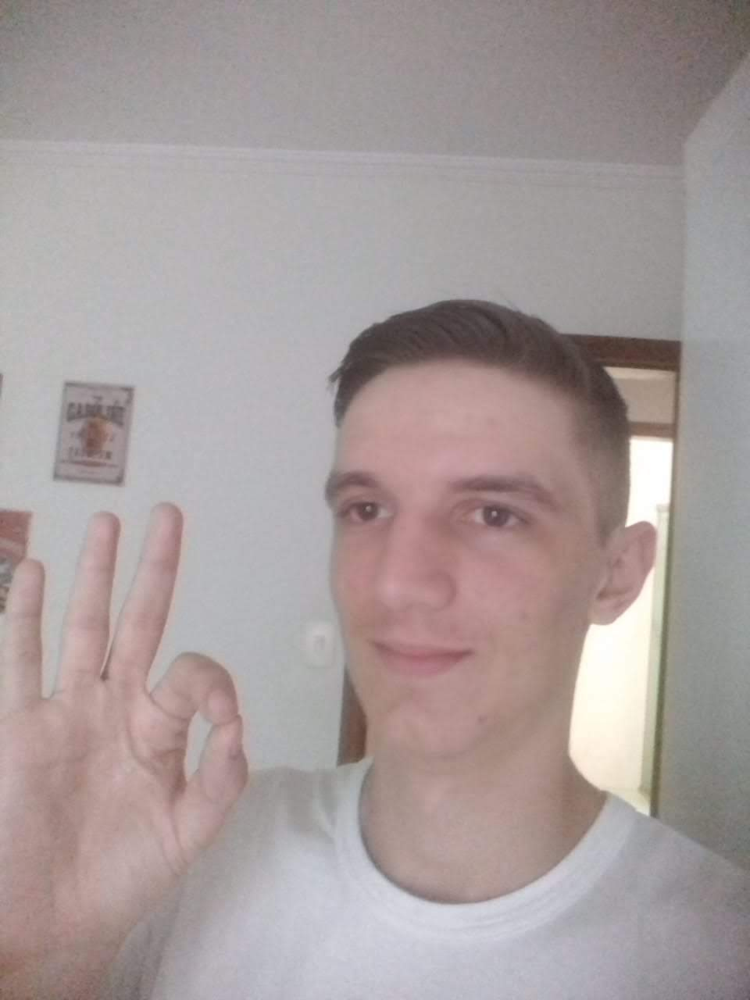
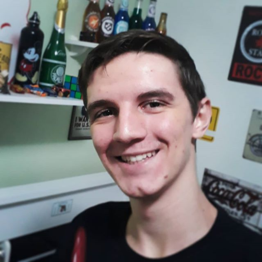

Lucas Boni
vulgo CalandriniSeja muito bem-vindo à pagina do membro Boni, um dos membros iniciais e principais do grupo Canarinho Pistola, responsável por ser o principal membro em realizar as tarefas do grupo, nas matérias do ensino médio, e além disso é responsável por ser o velho do grupo.
 Boni também é um ótimo gamer de jogo de RPG e jogos como LoL, Valorrant, CS e COD. Além disso é uma pessoa muito estudiosa e trabalhadora, responsável por ser líder dos canários game.
Uma de suas fortes característica também é sua velocidade, não é atoa que é o principal lateral do grupo, dono de sua posição, porém apesar dos bons números, não curte muito praticar o futebol.
"Fazer parte dos Canários é muito bom, esse grupo é uma coisa hilariante, todos os dias são admissível, não existe dia ruim nesse grupo, sempre que estou com eles, é uma sensação incrível"
- Lucas Boni Calandrin
- Itu
- Solteiro
- Lateral
- Accountant Scientist
Perguntado sobre uma palavra que define o grupo, Anselmo disse: "Sorte 🤞" - o motivo é porque ser escolhido para participar nesse grupo, tem que ser iluminado com muita sorte.